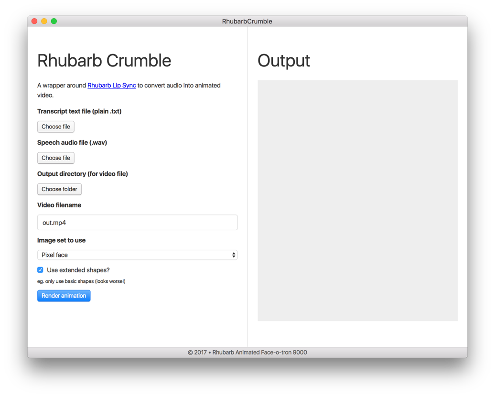

Making desktop apps with Electron
Building applications in JavaScript
Matt Andrews – @mattpointblank
14th March 2017 • Hydrahack Birmingham
My team were exploring auto-generating animations from audio files. We were wondering if it was possible, given a voice recording, to automatically output a video of some lips "speaking" the words.
With a bit of searching I came across Rhubarb, a great library for generating "mouth shapes" (eg. letters corresponding to commonly-understood lip positions in animation). I wrote a Node app to take an audio file, generate mouth shapes, then feed these shapes into ffmpeg using some pre-created lip images, in order to output a video.
The results looked like this:
Donald Trump "speaking"
This was all fine, but it was less than usable for the non-technical members of my team. Here's what they would have had to do to generate this output:
$ /usr/bin/ruby -e "$(curl -fsSL $HOMEBREW_URL)"
$ brew install node ffmpeg
$ node app.js -t speech.txt -s speech.wav -o out.mp4 -i shape-nameIf you're not a developer and not comfortable using the terminal, this isn't much fun. Passing arguments and parameters can be confusing at the best of times. Clearly something else was needed.
Enter Electron
I'd already heard of Electron – I'd been using Atom for a year or two, which I knew was built on top of it. If you're not familiar, it's effectively a bundled up browser (Chrome, via Chromium) which has access to the wider filesystem than a regular browser. Electron lets you write an app for multiple desktop platforms in HTML, CSS and JavaScript.
I was able to quickly put together this simple app in less than half a day's work:
Version 0.1 of my Electron app
In order to get off the ground with Electron, some code similar to this will give you a super-basic "Hello, world!":
main.js
const {app, BrowserWindow} = require('electron');
const path = require('path');
const url = require('url');
function createWindow () {
let win = new BrowserWindow({width: 800, height: 600});
win.loadURL(url.format({
pathname: path.join(__dirname, 'index.html'),
protocol: 'file:',
slashes: true
}));
}
app.on('ready', createWindow);Note: I've stripped a few things for brevity here, eg. window management. See the Echo docs for more code samples.
This is enough to get you up and running – it'll load up a file called index.html that's in the same directory as that code (inside main.js). When you add a "main": "main.js" entry to your package.json file, you can run electron . and you'll get a running app you can demo:
The most basic app you can start with Electron
Distribution
After you get over the initial excitement of making a real, proper desktop app (it shows up in the dock! It's got an icon! You can minimise it!), you might be wondering how to make a distributable version of it, so everyone can see your "Hello, world!" glory.
If you install electron-packager you can run the command below and output four apps for all the platforms Electron supports: Windows, Linux, OS X and Mac App Store.
$ npm install -g electron-packager
$ electron-packager . --icon icon.icns --platform allProcesses in Electron
Electron has two main processes where your code runs:
Main process
This is the part shown above – it's effectively the "server-side" of your app. Here you can manipulate the filesystem, load dependencies, manage configuration and do any background tasks your app needs. In mine, I go and fetch the ffmpeg binaries (eg. specific to the user's platform) at runtime.
Renderer process
The Renderer can be thought of as the "client-side" of your app. Here's the browser window where your HTML, CSS and JavaScript is executed. There are a few conventions that are different from a browser – for exampler, my app needed a file picker input. I started off using the standard HTML one but discovered that this didn't work as expected after packaging. Luckily Atom has a (more powerful) internal one you can use.
Communicating between processes
Once I'd got my app to show a UI onscreen for picking files and added some basic form validation, I needed to make a <button> element in the renderer process which would kick off my video task in the main process. To do this, you can use the ipc-renderer module for standard event emitting.
Main process
const { ipcMain } = require('electron');
// publish
window.webContents.send('event-from-main', {
data: 'bar'
});
// subscribe
ipcMain.on('event-from-renderer', (event, arg1) => {
console.log('Message from renderer', arg1);
});Renderer process
const { ipcRenderer } = require('electron');
// subscribe
ipcRenderer.on('event-from-main', (event, arg1) => {
console.log('Message from main', arg1);
});
// publish
ipcRenderer.send('event-from-renderer', {
data: 'foo'
});This code (above) will use standard pub/sub methods so you can communicate asynchronously between your process and bind events.
Why make a desktop app?
Okay, awesome – you can package up HTML into a desktop app. But why do you want to do this? Perhaps you might not have to!
Reasons to not make a desktop app
- You’re bundling your existing website into an app
- You’re bundling your existing website into an app
- You’re bundling your existing website into an app
- You’re bundling your existing website into an app
- You’re bundling your existing website into an app
- You’re bundling your existing website into an app
Come on. If you just package up an existing website into a desktop app, all you've done is invented a worse version of the web browser. Nobody needs this product and it'll just look lazy and pointless.
Reasons to make a desktop app
Assuming you're not bundling a website into an app, here are some good reasons for making a desktop app with Electron:
- You need access to the filesystem (eg. browser limitations)
- You’re making a GUI for a command-line app
- You don’t want to learn existing desktop UI techniques
- You probably already know most of the techniques (HTML/CSS/JS)
- You’re building for an offline/deployed environment
Conclusions
So, Electron is pretty cool for the right tool. In my case, it meant I could take a command-line app and package it into a nice-looking, easily distributable desktop app which can be used by non-tech users without having to explain to them how (and why) to install brew, node and ffmpeg (and that's before we get to using my app itself).
There are some concerns – apps built with Electron have a large-ish footprint (my app for OS X is 294mb for a couple of hundred lines of code. Arguably this matters less as performance (in terms of file weight) is less of a worry for a packaged app, but it's still more bloated than traditional desktop app output. That said, in order to build one of those, you'd have to learn some brand new things from scratch, and they're unlikely to look as native as Electron apps do, on each platform. Atom also gets criticised for being slower than competitors. For me, these weren't issues – this app was definitely more user-friendly than my CLI version, even if it sacrificed some speed to get there.
If you want to know more, check out the official Electron docs and see what you can build.
— Matt Andrews
mattandrews.info • @mattpointblank
Notes
Many thanks to Kath Preston (from 383) for organising Hydrahack where I gave this lightning talk.